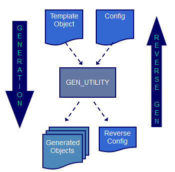

PL/SQL is a strongly typed language, which lacks some of the flexibility found in more modern languages like Java. It does not support inheritance, cannot work with objects without knowing their exact type, and lacks introspection capabilities to query properties of objects such as arrays or variables. Although object-oriented features (such as user-defined types) have introduced some flexibility, these features are not widely adopted in practice.
In PL/SQL, if you need to reuse an algorithm designed for table A on table B, the usual approach is to duplicate the code, which is generally poor practice. This is where code generation becomes valuable: a template can be written once and then used to generate multiple instances, each tailored to a specific table or object.
When bugs need fixing or updates are required, you only need to update the template and regenerate the code for all instances. Advanced techniques even allow limited modifications to the generated code, with the ability to regenerate it later without losing custom changes. Code generation can greatly enhance productivity by eliminating the need to manually write repetitive code across multiple instances..
This code generator was originally developed in 2001 to facilitate the development of COMREF interfaces. At the time, the SQL MERGE statement (introduced in SQL 2008) did not yet exist, so an ad-hoc algorithm was designed for parallelly synchronising tables. The challenge was to apply this algorithm to multiple interfaces with tables of different structures without duplicating code. Using dynamic SQL and PL/SQL was quickly ruled out due to complexity and performance limitations, leaving code generation as the only viable option.
The initial version was written in C, and its pre-processor (CPP) inspired key features in the code generator, such as directives and macros. The executable ran on Windows, lacked a database connection, and generated database scripts on a file system. These scripts then had to be manually executed within the database schema, making the process cumbersome, especially given the multiple iterations required to fine-tune the template.
In 2008, the tool was entirely redeveloped in PL/SQL for full integration with the database and has continued to evolve since. Templates, which were originally stored as files, are now managed as database objects (e.g., stored packages). Generated scripts are executed by default, creating or replacing database objects as needed. Over recent years, many features have been added, including dynamic generation, macros, and a fully customisable 100% generation approach.
The GEN_UTILITY is a code generator that enables the dynamic creation of PL/SQL scripts, which can then be executed to create or replace database objects. Written entirely in PL/SQL, it operates within the database, eliminating the need to interact with a file system.
Code generation is based on a single template and configuration data, allowing the generator to produce multiple objects as well as an optional reverse configuration for reverse generation (see Advanced Techniques chapter).
A template can be:
The objects that can serve as templates are those whose source code is accessible from the user_source Oracle data dictionary view, typically:
As their source code is not available in user_source, views can only be generated by supplying their definition to the generator as an input stream.
The input stream passed to the generator can be any valid PL/SQL code, such as:
BEGIN … END;)In addition to PL/SQL code, templates may include:
The code generator has been utilised within the Commission across a variety of projects (COMREF, SYSPER, Assmal2, PABS, etc.) and for multiple purposes.
Here is a non-exhaustive list of typical use cases:
Here are some of the key features:
The tool consists of the stand-alone GEN_UTILITY package. It does not use any tables and has no dependencies on other packages. The GEN_UTILITY_TST package contains utPLSQL unit tests, which are optional and do not need to be installed.
To install the tool, simply execute the two scripts that create the package specification and body, in that order.
If provided with the EC PL/SQL toolkit, it can also be installed via the following shell command in the DBM installer: dbm-cli install gen.
To uninstall the tool, just drop the GEN_UTILITY package. Due to its simplicity, no dedicated uninstallation script is provided.
If using the EC PL/SQL toolkit, it can be uninstalled with the following DBM installer command: dbm-cli uninstall gen.
To invoke the code generator, use the following syntax:
gen_utility.generate (<source> [, <options> [, <input> [, <target>]]]);
Alternatively:
gen_utility.generate (
p_source => <source>
[, p_options => <options>]
[, p_input => <input>]
[, p_target => <target>]
);
Parameters are as follows:
<source>: type and name of the template database object<options>: one or more options as described below (optional)<input>: input stream to be used as a code template (optional)<target>: object type and name to be generated (optional; defaults to <source>)<source> or <input> must be specified (both may also be provided).Available options:
-r: enable reversible code generation (default: disabled)-t: enable test mode (show but do not execute the generated script; default: disabled)-d <symbol>[=<value>]: define a symbol with an optional value-u <symbol>: declare a symbol as undefined-i <object type & name>: include code of the specified database object-o <owner>: define owner of source code (default: current user)-f: force template overwrite (default: input template object is never overwritten)-c: enable true ISO implementation compatibility (default: disabled)-m: enable macro mode (default: disabled)-s: enable silent mode (default: disabled)The input stream used by the generator can be one of the following:
-i option (typically a package specification containing overall configuration)<p_source> parameter (typically for generating packages)<p_input> parameter (typically for generating views or triggers)These parameters are processed in the specified order.
\). Such consecutive lines are processed as a single line (the backslashes are removed at runtime, and the lines are concatenated).Example:
#for col IN (\
SELECT column_name\
FROM user_tab_columns\
WHERE table_name = 'HRM_PERSONS'\
) -- this cursor-based loop is processed as a single line
Whitespace characters used to separate words include space (0x20), tabulation (0x09), carriage return (0x13), and linefeed (0x10).
Lines are processed in the following sequence:
//) are removed.\) are concatenated into a single line.#) are interpreted.--@ prefix at the beginning of a line (used for reverse generation) is removed.--@, and some lines may be enclosed with --#if 0 and --#endif directives.Symbols that appear in a line are replaced according to the following rules:
Substitution Examples
#define ALIAS ALIAS -- ignored
#define NAME per
#define TABLE_NAME hrm_persons -- will be replaced before NAME
SELECT * FROM TABLE_NAME -- will become SELECT * FROM hrm_persons, not TABLE_per!
Macro Example
#define ends_with(p_line,p_string) (SUBSTR(p_line,-LENGTH(p_string)) = p_string)
IF ends_with('TABLE','PERSONS') => (SUBSTR('TABLE',-LENGTH('PERSONS')) = 'PERSONS')
A directive is a statement that gives an instruction to the code generator. Most directives are inspired by and follow the same syntax as the C pre-compiler (cpp).
A directive starts with a word prefixed by a hashtag (#) and is optionally followed by some arguments. Since directives are not valid PL/SQL code, they do not compile and must be placed into comments (i.e., prefixed with a double dash (--) or enclosed between /* and */).
Here are two examples of (commented) directives:
--#define DEBUG true
/*
#if DEBUG
…
#endif
*/
Note that whitespace is allowed between the hashtag (#) and the name of the directive.
--# define DEBUG true
Here is the exhaustive list of available directives
| Directive | Usage |
|---|---|
#define |
Define a symbol or macro |
#undefine / #undef |
Undefine a symbol or macro |
#if |
Generation conditional on the value of a Boolean expression |
#ifdef |
Generation conditional on the existence of a symbol |
#ifndef |
Generation conditional on the non-existence of a symbol |
#elif |
Generation conditional on the value of a Boolean expression |
#elifdef |
Generation conditional on the existence of a symbol |
#elifndef |
Generation conditional on the non-existence of a symbol |
#else |
Alternative path when previous conditions are not met |
#endif / #end if |
End of a conditional block |
#for |
Counter-based or cursor-based loops |
#next / #endfor |
End of loop block |
#warning |
Display a warning message (and continue) |
#error |
Raise an error message (and stop) |
#pragma |
Additional compiler instruction (e.g., to enable/disable options) |
#include |
Include the code of another database object |
#execute |
Execute a function and get its output stream as input stream |
#begin |
Mark the beginning of a named block |
#end |
Mark the end of a named block |
#delete |
Delete the line containing this directive |
The #define directive defines a symbol and optionally assigns it a value. The behavior of the generator varies depending on whether the ISO compatibility mode is activated. When this mode is turned on, it behaves exactly like the C pre-compiler. The first implementation of the generator was not ISO compatible; therefore, to ensure backward compatibility with the initial solutions developed using the generator, the compatibility mode is turned off by default.
Syntax:
#define <symbol> [<value>]
The <symbol> is composed of any character until a whitespace is encountered; thus, special characters (e.g., $, &, etc.) are permitted. Symbol names are case-sensitive. The <value>, which is optional, includes all characters following the <symbol> but excludes the leading whitespaces that separate the <symbol> from its <value>; therefore, the value can contain whitespaces. Symbol substitution is applied recursively to the <value> until no further replacements can be made.
Examples:
#define $variable 10 -- symbol with special character (dollar sign)
#define DEBUG true
#define APP sp2
#define TABLE_NAME APP_persons -- resolved as sp2_persons after substitution of APP
#define STRING "string" -- value includes both quotes
#define TABLE_DESCRIPTION Persons having a relation with the EC -- value includes spaces
Syntax:
#define <symbol> [<value>]
Or
#define <macro>(<parameters>) [<value>]
The <symbol> or <macro> is a word, meaning it can only contain alphanumeric characters and underscores. To qualify as a macro, there must be no whitespace between the macro name and the opening parenthesis. Both symbol and macro names are case-sensitive. The <value> consists of all characters following the <symbol> or the closing parenthesis of the <macro>, excluding leading whitespaces used as separators; thus, the value can contain whitespaces. Importantly, no symbol substitution occurs when storing the symbol value.
Examples:
#define _identifier xyz -- symbol includes only alphanumeric and underscore characters
#define is_ws(ch) (ch IN (' ',CHR(9),CHR(10),CHR(13))) -- macro with one parameter
#define APP sp2
#define TABLE_NAME APP_persons -- value is APP_persons i.e., APP is not replaced!
The following table shows the differences between the two modes:
| Behaviour | ISO Compatibility Mode On | ISO Compatibility Mode Off |
|---|---|---|
| Symbol Name | Identifier (alphanum/_) | Word (any non-whitespace char) |
| Substitution When Defining | No | Yes & Recursive (*) |
| Substitution When Using | Yes & Recursive (*) | Yes & Recursive (*) |
| Macro with Parameters | Supported | Not Supported |
(*) When symbol substitution is applied to directive arguments, it's never recursive.
When a symbol is no longer needed, it can be undefined using the #undefine or #undef directive. This directive takes a single argument, which is the name of the symbol to remove from the symbols table. If the symbol did not exist when attempting to undefine it, nothing happens.
Syntax:
#undefine <symbol>
OR
#undef <symbol>
Example:
#undefine DEBUG
OR
#undef DEBUG
Code can be copied to the output based on certain conditions. Inclusion criteria can include the existence of a symbol (#ifdef, #elifdef), the non-existence of a symbol (#ifndef, #elifndef), or a boolean expression (#if, #elif). The #else path is followed when none of the previous conditions is met.
The general syntax for conditional generation is as follows:
#if <expression> | #ifdef <symbol> | #ifndef <symbol>
<block>
#elif <expression> | #elifdef <symbol> | #elifndef <symbol>
<block>
#else
<block>
#endif | #end if
Example:
#ifdef DEBUG
-- Code included when DEBUG symbol is defined
#else
-- Code included when DEBUG symbol is not defined
#endif
Your text is mostly clear and well-organized. Below is a revised version with slight modifications for clarity and flow:
Conditional expressions used with the #if and #elif directives can contain:
The following (C and PL/SQL) operators are available, sorted from highest to lowest priority:
| Priority | Operators | Meaning |
|---|---|---|
| -1 | ( ) | Parenthesis (for grouping) |
| 3.5 | 0 | Unary minus |
| 1 | ! ~ | Not, bitwise complement |
| 2 | * / % | Multiplication, division, modulo |
| 3 | + | Plus, minus |
| 6 | < <= > >= | Less/greater than or equal |
| 7 | = == != <> LIKE | Equals, not equals, like |
| 9 | & | Bitwise and |
| 10 | | | Bitwise or |
| 11 | NOT | Logical not |
| 12 | && AND | Logical and |
| 13 | ^ XOR | Logical xor |
| 14 | || OR | Logical or |
| 99 | Lowest priority (default) |
Operators with the same precedence are evaluated from left to right.
The following (C and PL/SQL) functions can also be used:
| Function Name | Purpose |
|---|---|
| INITCAP ( |
Capitalization of a string |
| LOWER, STRLWR ( |
Conversion of a string to lowercase |
| UPPER, STRUPR ( |
Conversion of a string to uppercase |
| LENGTH, STRLEN ( |
Length of a string |
| TO_CHAR ( |
Conversion of a number to a double-quoted string |
| TO_NUMBER ( |
Conversion of a double-quoted string to a number |
| defined ( |
Check whether a symbol is defined or not |
The following rules are applied when evaluating expressions:
The generator can iterate over the template to produce multiple lines of code. A single line of code in the template can be evaluated several times, resulting in multiple lines in the output, which may differ after symbol substitution. These directives do not exist in the C pre-compiler, which is why their syntax has a different style. The generator supports two types of loops: counter-based loops and cursor-based loops.
A counter-based loop allows you to repeat the same lines of code a fixed number of times. It follows the Basic syntax for easier parsing and is identified by its loop variable name, which starts with a dollar sign ($).
Syntax:
#for $<var> = <min> to <max> [ step <step> ]
...
#end
Example:
/*
-- Procedure call with up to 10 parameters
Test (
#for $i = 1 to 10
#ifdef PARNAM$i
#if i=1
PARNAM$i=>PARVAL$i
#else
, PARNAM$i=>PARVAL$i
#endif
#endif
#next
*/
);
A cursor-based loop iterates over the records fetched by a query and has a syntax similar to the PL/SQL cursor for loop. It is identified by its variable name, which does not start with a dollar sign ($).
Syntax:
#for <var> IN ( <select-statement> )
...
#end
The entire select statement must be on the same line as the #for directive. To break a lengthy query into several lines, use the backslash () line continuation character at the end of each line that you want to continue on the next one. For each column selected by the query, a symbol <var>.<column> is created with the value returned for that column.
Example:
/*
-- Display all columns of the "r_per" record (defined as of HRM_PERSONS%ROWTYPE)
#for col IN ( SELECT column_name FROM user_tables WHERE table_name = 'HRM_PERSONS' )
dbms_output.put_line('col.column_name='||r_per.col.column_name);
#end
*/
A named-block is a portion of code that is enclosed between the #begin and #end directives or between the @begin and @end tags, with the name specified as an argument.
Syntax for directives:
--#begin <name>
<named-block of PL/SQL code>
--#end <name>
Syntax for tags (alternate syntax for backward compatibility):
--@begin:<name>
<named-block of PL/SQL code>
--@end:<name>
You will note that:
#), directive and block names are separated by whitespace(s).@), tags and block names are separated by a colon and no space.You can include the code existing in another database object (or part of it when specifying a named-block) via the #include directive. This allows you to reuse existing code, thereby avoiding replication.
Syntax:
#include <object-type> <object-name> [<block name>]
Example:
#include PACKAGE BODY my_package my-block
PACKAGE BODY my_package IS
...
#begin my-block
... PL/SQL code ...
#end my-block
When no named-block is specified, the whole source code of the referenced object is included.
Generating complex code based on static templates can be challenging. The #execute directive introduces more dynamism by allowing you to call a pipelined (stand-alone or packaged) function that generates and returns the code to be included in the final output.
A typical usage is the dynamic generation of insert, update, and delete statements (or parts of them) because the list of columns they reference depends on the table being accessed.
Syntax:
#execute <function>
Example:
#define _TABLE_ hrm_persons
...
INSERT INTO _TABLE_ (
#execute gen_columns_list('_TABLE_')
) VALUES (
#execute gen_columns_value('_TABLE_')
);
FUNCTION gen_columns_list (
p_table_name user_tables.table_name%TYPE
)
RETURN VARCHAR2 PIPELINED
...
The #warning directive allows you to raise a warning message in the standard output of the code generator (displayed when turning DBMS output on), without stopping the code generation process.
Syntax:
#warning <message>
Example:
#if DEBUG
#warning Don't forget to remove debug code before going live!
#endif
The #error directive allows you to raise an error message in the standard output of the code generator (displayed when turning DBMS output on) and to stop the code generation process. A typical usage is to stop the code generation when an unexpected condition is met.
Syntax:
#error <message>
Example:
#if ORACLE_VERSION < 11
#error Versions prior to Oracle 11g are no more supported!
#endif
The #pragma directive is a method for providing additional information to the code generator, thereby avoiding the necessity to create additional ad-hoc directives. A typical usage is to change on-the-fly options that are normally specified when invoking the code generator (switches).
Syntax:
#pragma <option>
Where option is one of the following:
debug / nodebug: turn debug mode on / offiso / noiso: turn ISO compatibility mode on / offreversible / noreversible: turn reverse generation on / offmacro / nomacro: turn macro feature on / offExample:
#pragma debug
<lines for which debug mode is turned on>
#pragma nodebug
The elaboration of a template is an iterative process, as the validity of its code (which does not compile due to the used directives and symbols) can only be verified when the final generated code is compiled. Each time an error is encountered, the template must be corrected, and the code generated again to check its validity. This iterative process can quickly become cumbersome.
An alternative approach is reverse generation, which allows you to make the necessary corrections to the generated code to make it compile without error and subsequently regenerate the template from the modified generated code.

Enabling reverse generation has two effects during the generation process:
#include, #execute, etc.) is enclosed between #if 0 and #endif directives to ensure that this code is removed during the reverse generation process.A reverse symbol table is also generated, which will be used during reverse generation to perform reverse symbol substitution (i.e., substituting symbol values with symbol names). For this process to succeed, symbol names must be chosen very carefully.
Example:
Template:
1: /*--#delete
2: #define _TABLE_NAME_ hrm_persons
3: #include PACKAGE BODY hrm_lib
4: SELECT id, name FROM _TABLE_NAME_ WHERE ……
5: */--#delete
Symbol Table:
_TABLE_NAME_ hrm_persons
Reverse Symbol Table:
hrm_persons _TABLE_NAME_
Generated Code:
1: --@/*--#delete
2: --@#define _TABLE_NAME_ hrm_persons
3: --@#include PACKAGE BODY hrm_lib
4: --#if 0
5: <content of hrm_lib package body>
6: --#endif
7: SELECT id, name FROM hrm_persons WHERE ……
8: --@*/--#delete
As comments are ignored, the only code relevant for compilation is:
<content of hrm_lib package body>
SELECT id, name FROM hrm_persons WHERE ……
During reverse generation:
--@ (lines 1-3 and 8) are restored to their initial form (lines 1-3 and 5).#if 0 and #endif) are ignored as the condition "0" evaluates to "false."The template code can be sourced from a database object or passed as a text input stream parameter. As mentioned earlier, using a text input stream is the only option available for generating views, as their definitions are not accessible in user_views. While the code for database triggers can be utilized as a template, it is often more convenient to work with a text input stream instead.
The generator is called with the following text input stream:
DECLARE
l_source VARCHAR2(4000) :=
'
CREATE OR REPLACE VIEW _TABLE_NAME__v AS
SELECT
#execute hrm.gen_view_columns(''_TABLE_NAME__v'')
FROM _TABLE_NAME_
WHERE ...
#ifdef CURRENT
AND current_version = ''Y''
#endif
'
;
BEGIN
gen_utility.generate(NULL, '-d_TABLE_NAME_=hrm_persons', l_source);
END;
/
Here is the generated script that will create the view when executed:
CREATE OR REPLACE VIEW hrm_persons_v AS
SELECT
id, name
FROM hrm_persons
WHERE ...
In the input stream, you'll notice:
#execute, #ifdef, #endif).hrm.gen_view_columns pipelined function is called to retrieve the list of columns.The generator is called with the following text input stream:
DECLARE
l_source VARCHAR2(4000) :=
'
CREATE OR REPLACE TRIGGER sp2_xxx_audit_trg
BEFORE DELETE OR INSERT OR UPDATE
ON TAB_NM
REFERENCING NEW AS new OLD AS old
FOR EACH ROW
DECLARE
...
BEGIN
...
END;
'
;
BEGIN
gen_utility.generate(NULL, '-dxxx=per -dTAB_NM=hrm_persons', l_source);
END;
/
In this example, the input stream contains the definition for a trigger, showcasing how template code can be dynamically generated and executed.
This section describes how to customize the generated code without losing your modifications if the code needs to be regenerated after adapting the template. The technique involves identifying the sections where you want to add custom code using named blocks (with #begin and #end directives) and including those blocks in the template (using #include).
Typical Named Blocks for Packages
decl) for additional global variables and/or procedures (or functions), located before the first global procedure or function.<proc>:decl) for declaring additional local variables and procedures/functions, located before the first local procedure or function.<proc>:begin) in the body section, located before or after the template code.body) in the initialization part of the package body, located before or after the template code.The same technique can also be applied to package specifications if needed.
Example
Template:
CREATE OR REPLACE PACKAGE BODY hrm_lib AS
<global variables are here!>
--#begin decl
--#execute gen_utility.get_custom_code('package body hrm_lib', 'decl')
--#end decl
<global procedures/functions are here!>
-- The following procedure is generated from the template
PROCEDURE get_name IS
<local variables are here!>
--#begin get_name:decl
--#execute gen_utility.get_custom_code('package body hrm_lib', 'getname:decl')
--#end getname:decl
BEGIN
<procedure code is here!>
--#begin get_name:body
--#execute gen_utility.get_custom_code('package body hrm_lib', 'getname:body')
--#end getname:body
END;
...
BEGIN
<initialization part is here!>
--#begin body
--#execute gen_utility.get_custom_code('package body hrm_lib', 'body')
--#end body
END;
Generated Code:
CREATE OR REPLACE PACKAGE BODY hrm_lib AS
<global variables are here!>
--#begin decl
<custom global variables>
--#end decl
<global procedures/functions are here!>
-- The following procedure is generated from the template
PROCEDURE get_name IS
<local variables are here!>
--#begin get_name:decl
<custom local variables are here!>
--#end getname:decl
BEGIN
<procedure code is here!>
--#begin get_name:body
<custom code is here!>
--#end getname:body
END;
...
BEGIN
<initialization part is here!>
--#begin body
<custom code is here!>
--#end body
END;
Warning: Custom code must be located strictly between the #begin and #end directives; otherwise, it will be lost upon regeneration! Depending on your needs, you can create additional named blocks to insert your code before, after, or even between the generated lines of code. In the above example, customizations are intended to be added after the generated sections, but you can use more descriptive block names (e.g., ...:body:before, ...:body:after, or any other relevant naming convention) to place your code appropriately.
The following approach for source control is recommended based on testing across multiple projects:
Version Control for Templates: Place the templates under version control rather than the generated scripts.
On-the-Fly Deployment: To deploy a release in any environment (including production), execute the scripts that create or update the templates, and generate the database objects on-the-fly.
Version Control for Customized Objects: When generated objects have been customized, and only in that case, add their scripts to version control to ensure that the custom code is preserved.
The GEN tool appears to be a robust and versatile code generation utility designed specifically for database environments. Here are some thoughts on the tool itself based on its features and functionalities.
Template-Based Generation: The use of templates allows for a high degree of customization and reusability, making it easier to maintain and update code across various database objects.
Support for Directives: The support for directives (e.g., #if, #define, #execute) provides flexibility in code generation, enabling conditional compilation and the inclusion of dynamic elements. This can streamline the development process and enhance productivity.
Reverse Generation Capability: The reverse generation feature is particularly noteworthy, as it allows users to modify generated code without losing the ability to regenerate the original template. This can significantly reduce the time spent debugging and refining templates.
Customization Options: The tool's ability to incorporate custom code within generated scripts (via named blocks) is a powerful feature that enables developers to tailor generated code to their specific needs without extensive rewrites.
Integration with Database Objects: By allowing templates to be sourced from database objects or text input streams, the tool provides flexibility in how code is generated, making it applicable to a wider range of scenarios, including view and trigger generation.
Learning Curve: For new users, the variety of directives and customization options may present a learning curve, particularly if they are not familiar with similar tools or concepts.
Complexity: The iterative process of correcting templates and generating code might become cumbersome, especially in larger projects or when working with complex templates.
Dependency on Template Design: The effectiveness of the tool heavily relies on how well the templates are designed. Poorly structured templates can lead to complicated or hard-to-maintain generated code.
Debugging Generated Code: While the tool offers features to aid in debugging, generated code can still be challenging to troubleshoot if it contains errors or if the generated output is not as expected.
The GEN tool seems to be a powerful asset for developers working with database code generation. Its flexibility, customization options, and advanced features like reverse generation make it a valuable resource for efficiently creating and managing database objects. While there are some challenges associated with learning and using the tool, the benefits it provides in terms of code maintainability and adaptability likely outweigh these limitations for many users.